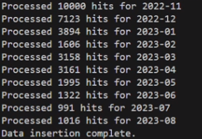
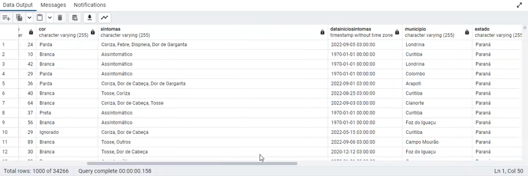

Influenza Syndrome Notifications
Overview
This program utilizes Python to consume an API for notifications of influenza-like illness in the state of Paraná, Brazil and to insert the data into a local PostgreSQL database. Here's the code on GitHub.
Technologies Used
- Python: Developed the ETL script to get useful data and load it into a local database.
- PostgreSQL: Designed and implemented a table in a PostgreSQL to store data.
- Git: Managed version control using Git to track changes and collaborate on the codebase.
- GitHub: Hosted the project on GitHub to facilitate code sharing, collaboration, and version history tracking.
- JSON: The API utilizes JSON (JavaScript Object Notation) as the data format for API responses.
The script utilizes the requests library to make authenticated requests to an Elasticsearch API endpoint containing flu syndrome-related data. The data retrieval is done in batches, with each batch covering a specific date range.
The retrieved JSON data is processed to extract specific fields of interest, such as ID, timestamp, gender, age, symptoms, etc. Certain data cleaning and formatting operations are performed, ensuring compatibility with the PostgreSQL schema.
The script connects to a PostgreSQL database using the provided credentials. It checks if the table (Flu_syndrome_data) exists; if not, it creates the table with predefined columns. The processed data is then inserted into the PostgreSQL table using parameterized queries, ensuring data integrity.